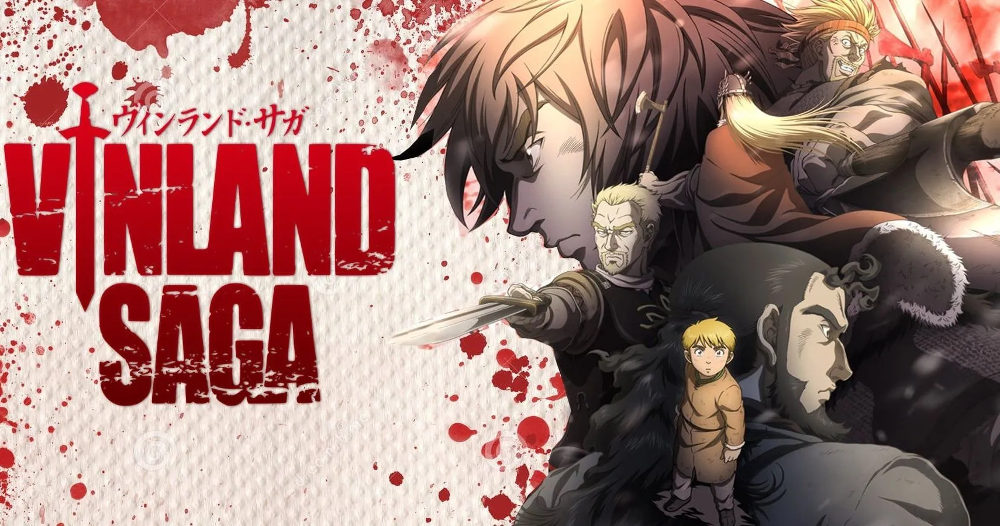

The majority of the episodes I enjoy the most are from the Slice of Life genre because they teach me
valuable lessons and because the shows themselves depict the main characters' simple lifestye, which I
also find to be quite appealing. But there are other genre's also. So here we go:
1. Vinland Saga

Anime Name: Vinland
Saga
Genre: Action, Adventure, Drama
Main Characters: Thorfinn, Askeladd, Einar
Seasons and Episodes: It is still airing. 2 seasons have come out till now. Each season with
24 episodes.
Synopsis: Thorfinn is son of a great warrior, Thors. There is another character named,
Askeladd. He killed Thors on a mission. Seeing his father die right in front of him to save
everyone, Thorfinn becomes revengefull and swears to kill the man Askeladd. But in the path of
revenge he kills countless people. And in the end war and his revenge seeking made him worse. Later
wasn't even able to take his revenge. From that mental state he gradually became normal but the
trauma of killing people come back all time. Later he becomes friend with another character named
Einar with whom Throfinn started a journey of making a land where no war will ever come. And
everyone will be happy. And in the path of making such a land he had to give test of becoming a good
person. It is such a beautiful anime. The sound designing, and opening and ending songs everything
makes this anime very good. You have probably heard the quote "You have no enemies". It was from
this anime. Thors tells this line to Thorfinn when Thorfinn takes a sword from his father's trunk.
Through out the anime this quote came back again and again and the meaning is explored
2. Eighty Six

Anime Name: Eighty
Six
Genre: Action, Drama, Sci-Fi
Main Characters: Vladilena Milizé, Shinei Nouzen
Seasons and Episodes: It has total 2 seasons, 12 episodes each.
Synopsis: The people with black hair are no longer considered as human. And they are pushed
to the 86th district, nearest to the war field. And they are the ones who are sent to the war with a
unmanned combat drones developed by the Republic of San Magnolia, called “Juggernaut” in answer to
the attacks by the autonomous unmanned drones of the neighboring Empire of Giad, the “Legion”. Even
if the black haired peopel die in warfront it is considered as no human casualties as they are not
considered. This anime shows the difference between the life of people who are in warfront and the
life of people sourrounded by very high security and peace. When some black haired people do not die
in war they are sent to directly charge to the opponent till they die. When this order finally comes
to Shinei it is protrayed as they are finally free. It is a beautifull anime. And i will recommend
never skip any opening and ending song. As it will hit deeper each time
3. Bakuman

Anime Name: Bakuman
Genre: Comedy, Drama, Romance, Slice Of Life
Main Characters: Mashiro Moritaka, Takagi Akito, Niijuma Eiji, Azuki Miho
Seasons and Episodes: It has total 3 seasons, 24 episodes each.
Synopsis: The main character is Mashiro Moritaka. He is good at drawing since childhood. But after his idol, his uncle who is a manga writer (Mangaka) dies he stopped drawing. And after that he became aimless in his life. He likes a girl named Azuki Miho in his class. But he thinks he has no chance. So he draws her face in his notebook. Then Takagi who is the class topper notices this and in return for his notebook he tells Mashiro to be a mangaka. But Mashiro does not agree with him. He tells Takagi the stats about how very few people finally makes a living being a mangaka. Then makes Mashiro agree with his plan by saying that he will propose to Miho. But Mashiro likes her very much. So he just goes with him but not able to stop him. Only to find out that Miho is going to be a voice actor. Then Takagi tells her that they are going to be mangaka. So Mashiro makes a plan with Miho that if their manga becomes anime then Miho will be the voice actor of the leading female character. Then being phased out at Miho's cuteness Mashiro tells her to marry her if their plan becomes successful. They make a promis they will talk with each other if their plan becomes successful in order to push each other towards their dream and work hard. Thus becomes thir journey of being mangaka. Their group name becoms 'Ashirogi Muto'. Along the way of becoming mangaka they face many obstacles, their manga becomes cancelled even after getting serialized. Mashiro also become very sick after pushing himself too much. They meat a very sweet charcter named Niijuma Eiji who is considered as a genius manga. But Eiji himself becomes a fan of Mashiro and Takagi. And time to time helps them. Their are other characters also who are very sweet some want to make an easy living, some has a father like relation ship with his editor. In total it makes you motivated to work hard. This anime is very sweet. It shows there will always be people who are much talented than you. But work hard. Nothing can replace hard working. Its a must watch anime.
4. ReLIFE

Anime Name: ReLIFE
Genre: Drama, Romance, Slice of Life
Main Characters: Arata Kaizaki, Chizuru Hishiro, Ryou Yoake
Seasons and Episodes: It has total 1 season with 13 episodes and an OVA with 4 episodes. You can say the OVA is as equivalent to 2nd season
Synopsis: It is a story of a man named Arata Kaizaki who leaves the first job he got just after a very few days because of the toxic atmosphere which made his senior suicide. But that decision made him jobless and he becomes a NEET. Then Yoake comes and gives him a program to change him back to a teen in order to change himself as a better man. As the story goes on, he lives his re-life his as a high school student. But as the story goes on he gradualy makes a positive impact on the classmates. He then makes his friends in school learn to live the moment and cherish it as life is short. Arata himself fell in love with another girl in the school Hishiro. Hishiro is actually also a participant of the program of Yoake. She is an emotionless girl and never feels anything. Even she does not know how to smile. As she spends her time with Arata she learns hwo to feel about others. This anime teaches us without the imperfect part of our life, we never stand on here today. The failure makes us try harder so that in the end we can do everything better. All things happened in our life is happened for our sake. Be grateful for all of them. This anime is very sweet and there is a very emotional ending scene in the OVA.
5. Orange

Anime Name: Orange
Genre: Drama, Romance, Sci-Fi, Slice of Life
Main Characters: Takamiya Naho, Suwa Hiroto, Naruse Kakeru, Hagita Saku, Murasaka Azusa, Chino Takako
Seasons and Episodes: It has only 1 season with 12 episodes
Synopsis: Naho receives a letter from her future self to save Kakeru. Kakeru is a transfer student. On the first day of joining Suwa, Naho, Azusa, Chino, Hagita invites Kakeru with them to eat buns. After requesting him again and again he finally agrees and spends a very joyful moment with them. The next day Kakeru was absent. He comes back to school much later. Naho finds that they day they invited Kakeru, since Kakeru didn't go to home early his mother committed suicide. And Kakeru makes himself responcible for his mother's death. The more days passes on Naho tries to drag Kakeru out of this, but Kakeru more and more makes himself guilty. Gradually Naho felt that she fell in love with Kakeru. In future Kakeru is dead. So Naho married to Suwa. So from school Suwa always like Naho. But seeing Naho hurt he pushes Naho to comfort Kakeru. Personally Suwa is my favourite. Anything more will be huge spoiler. But this anime is very emotional. Everyone should watch this.